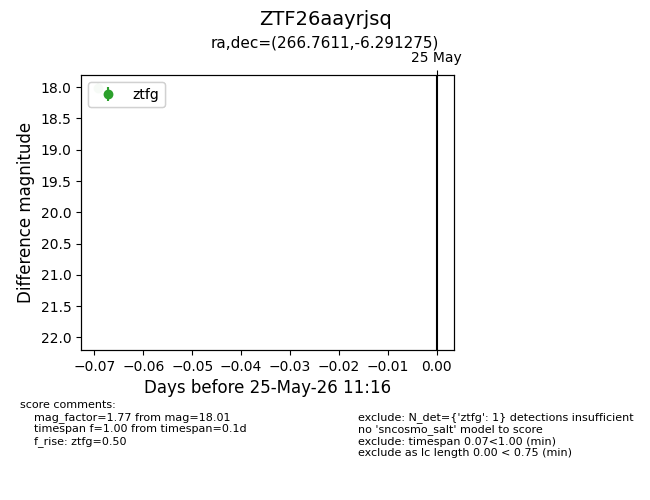
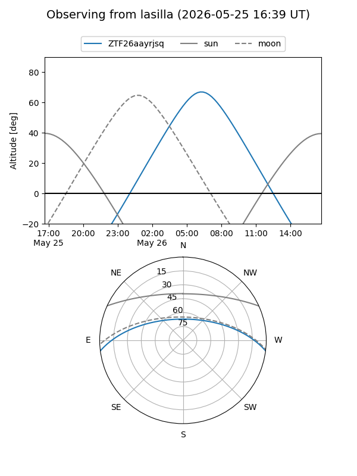
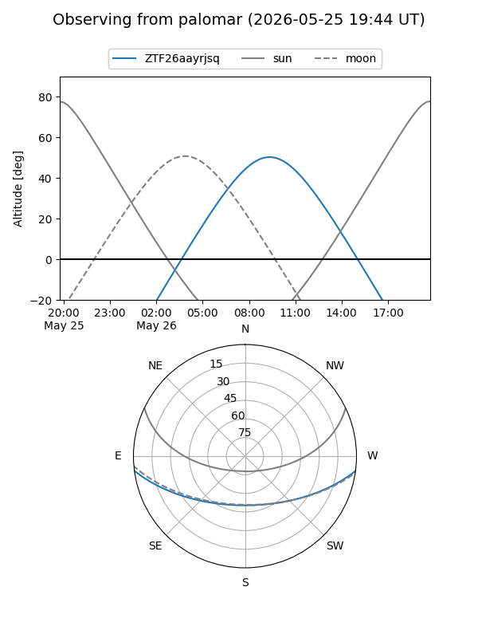

ZTF26aayrjsq
Target ZTF26aayrjsq at 2026-05-25 11:17
Aliases and brokers:
lsst-FINK: link
lsst-Lasair: link
lsst-ALeRCE: link
ztf-FINK: link
ztf-Lasair: link
ztf-ALeRCE: link
alt names
ZTF26aayrjsq (ztf,fink_ztf)
Coordinates:
equatorial (ra, dec) = 266.7611,-6.29128
equatorial (HMS+DMS) = 17:47:02.65,-06:17:28.59
galactic (l, b) = (19.7768,+11.26394)
Flags:
Photometry:
last ztfg=18.01
1 ztfg detections
Lightcurve

Visibility


Additional plots